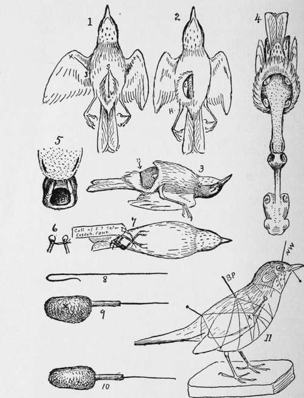

How To Stuff A Bird
Description
This section is from the book "The Book Of Woodcraft", by Ernest Thompson Seton. Also available from Amazon: The Book of Woodcraft.
How To Stuff A Bird
(By E. L. S. from Country Life, July, 1904)
A boy found a bird that was lying dead in the woods. Its beautiful plumage, its form and its markings delighted his eye. He carried it home to show to his mother and to ask its name. She admired it with him but she could not tell him what it was, and at length said, "Now go and bury it before it begins to smell".
The boy had not given a thought to the history of the bird, nor had its death caused him a touch of sorrow. He was interested in it as a strange and beautiful thing, and the idea of burying all that beauty, or - worse - seeing it corrupt, now gave him a deep regret.
"How I wish I knew how to stuff it," he said, feeling that then he might always renew his present enjoyment. He was expressing the feeling of most young people when they see a dead bird. All would like to save its beautiful plumage at least. They know it can be done, but have an idea that it is a very difficult thing. In a sense this is true. It is so difficult to stuff a bird well, that not many men in the world to-day can do it. As with all arts, there can be but few masters. But the main process itself is easy to learn; and if the boy who tries to do it fails in making a life-like bird of his specimen, he at least does three things: he saves its beautiful plumage; he adds to his bird acquaintance; and he gains a keener appreciation of the work of others.
While each taxidermist has his own methods, all agree in the main. The directions here given are those, recommended by good authorities, and that I have found most practical in my own work.
There are two ways of preserving a bird:
(a) By making a skin.
(b) By mounting the bird.
Making A Skin
The first is removing and preserving the skin in such a way that it may always serve to show what the bird's plumage is like. Most naturalists prefer to keep their specimens as skins, not only because it is easier and cheaper to do so, but because then they take up less room, and the skin may be properly mounted at any later time.
These are the tools and materials used in making a skin:
A sharp knife, a pair of stout, short scissors, and a pair of small forceps. (It is, however, quite possible to dispense with all but the knife and scissors in making a bird skin. I rarely use any tool but the scissors).
For materials you will need cotton wool, needle and thread, arsenical soap (some naturalists prefer dry white arsenic) and cornmeal (or fine hardwood sawdust). Some plaster of pans and benzine will also be required if the specimen is soiled with grease.
The hardest birds to begin on are the very large ones, and the next hardest, perhaps, are the very small ones. The easiest birds are those about the size of a robin or bluejay (leaving out the woodpeckers).
Supposing the specimen to be skinned is a robin:
First put a little plug of cotton wool in its throat and mouth, also into any wounds the bird may have, to stanch the flow of blood, etc. This should be done the moment the bird comes into your possession.
Now lay the bird on its back, tail toward your right hand, part the feathers, and make a slit from near the end of the breast-bone into the vent (S.V. Fig. 1 p. 356), taking care to cut only the skin, not the walls of the abdomen. Separate the skin from the flesh by pushing it with the finger nail or knife-blade. As soon as the flesh is exposed, put a pinch of meal on it to keep the feathers from sticking, and also to soak up oil, blood, etc. Some use plaster for this; but plaster is disagreeable under the finger nails, it takes the gloss off the feathers, and if the specimen happens to be a game-bird it injures the meat for the table. The plaster is better however for white, fluffy birds, as meal or sawdust lodges in the down.
Push the skin from the body till the leg is reached. Work the leg out of the skin till the knee-joint is clear on the inside of the skin; (H L, Fig. 2) cut the leg off at the knee, taking great care not to cut or tear the skin. The severed leg now hangs to the skin. When both legs are thus cut, work around the base of the tail, freeing the skin. Then cut straight through the bone and all, with the scissors, at the part marked with arrow and black line in Fig. 3 - leaving the tail bone with the tail hanging to the skin.
This is one of the most difficult parts of the skinning. It is so hard to get at, and so easy to tear the skin, that one is to be congratulated if in the first lesson he safely "rounds Cape Horn".
At all stages keep the meal applied to the body as fast as it is exposed, and in quantity enough to soak up all moisture; and avoid stretching the skin.
With the tail and legs free, there is no difficulty in pushing the skin off until stopped by the wings.
cut them off at the shoulder joint deep in the muscles of the breast (W. W, Fig. 4), leaving them attached to the skin, just as the legs and tail are.
The skin is now inside out. It can readily be worked along the neck and onto the head. Here it is stopped by the ears. In the robin these are like pockets of skin tucked into the small skull and may be easily pulled out without cutting. In large birds the knife must be used. The next and last difficulty is the eyes. The skin must be cut free from them, carefully avoiding injury to the eyelids or the eyeballs.
Now the skin is attached only to the forepart of the skull (Fig. 4). cut off the neck at the back of the skull and the skin is freed from the body, but needs careful cleaning.
Dig the eyes out of the sockets, taking great care not to break the eyeballs, as their liquid is very difficult to remove from the feathers. cut out a section of the skull so as to enlarge the hole behind by extending it downward and sideways, as shown in Fig. 5, and remove the brains through this. Cut off any lumps of flesh left about the jaws, but do not break the jaw bone or its joints.
Next turn attention to the wings. Push the skin back to the first joint (the elbow) in each. cut and scrape the meat from the bone. But there is a joint beyond this - the one that corresponds with our forearm. This must be reached in a different way. There are two bones in this, and the space between them is full of meat. The quill feathers on its under side hold the skin tight. In birds up to the size of a robin, this can be cut out after the skin is forced a little farther back than the elbow joint on the upper side, but in large birds it is well to slit the skin under the wing from X to J (Fig. 1), along the line between the two bones.
Skinning and stuffing a Robin.
Clean off the leg bones in the same way as the first wing joint, turning the skin back as far as the heel joint (H in Fig. 2). Carefully scrape off any lumps of fat left on the skin, and especially remove the grease and flesh about the tail bones.
Now this is the time I have usually found most convenient to remove stains from the plumage.
If of blood, hold the stained feathers on the inside rim of a cup of lukewarm water and wash till clear. Then dry the feathers with cornmeal. The shaking and turning they get in the next operation will make them fluff out as before.
If the stain is grease, use a cream made of benzine and plaster of Paris. Let this dry on the feathers. It dries as powder and falls off, taking the grease with it.
The next thing I now do is to tie the wing bones with a stout linen thread, so that their ends are shackled together as far apart as in life, (Fig. 6.) Some do not do this, but it strengthens the skin, and I find it a great help in several ways.
Now comes the poisoning. After trying dry arsenic for long, I have come back to the old-fashioned arsenical soap. It is much less liable to poison any one, since it is not blown about by the wind. It does not look like anything but soap and hence is unlikely to be mistaken for something good to eat. And last of all the soap in it takes care of the grease in the skin.
Every part of the under side of the skin and of the bones exposed is to be painted with this cream of the soap. It is well now to lay a thin film of cotton over the skin or sprinkle it lightly with sawdust to keep the feathers from sticking in the soap.
Make two tight round plugs of cotton each as big as the eyeball, put one into each eye-socket.
Now push the head back into its place. This is easy when the neck is slippery with the soap. Work the wing and legs back into their places after wrapping each of the bones with enough cotton to take the place of the flesh cut off. This wrapping is not necessary with very small birds, but the larger the bird, the more it is needed.
Make a neck of the cotton, push it with the forceps up the neck skin, and well into the skull. Let it hang into the body part, under the string that joins the wing bones. Push another soft wad up the neck and into the throat.
Shape a large piece of cotton for the body; set it in place, and draw the skin gently over it till the opening is closed. In large birds it is well to stitch this up, but it is not needed in small ones. All that is needed now is the prinking. Use a needle through the openings of the eyes to fluff out the cotton balls in each, till they fill out the sides of the head properly.
Set the innermost wing bones parallel with each other. Aim to arrange the feathers by arranging the skin and bones to which they are attached, rather than by prinking the feathers themselves.
If the wing was slit open as at X J, (Fig. 1), fill the space with cotton and close with a few stitches.
If at any time it is necessary to leave the specimen half finished, wrap it in a damp cloth and put it in a close tin box. This will keep it from getting dry.
In skinning large birds, a strong hook, attached to a string from the wall in front and above, is a great help. As soon as the tail is cut off stick this hook into the bony pelvis. It holds the bird away from you and answers as a third hand.
Finally, make a little shroud out of a sheet of cotton and wrap the bird in this before setting it to dry.
Cross the legs as in Fig. 7, and attach a label to these, giving date, sex and place where the bird was taken.
The work is now done. But it is wise to lift the skin the next morning and see if all goes well. In a few days it will be dry and safe from ordinary corruption, but must be protected from moth and insects.
This is a museum skin. It can be kept indefinitely in this shape, or at any time it can be softened up and mounted.
Continue to:
Tags
bookdome.com, books, online, free, old, antique, new, read, browse, download